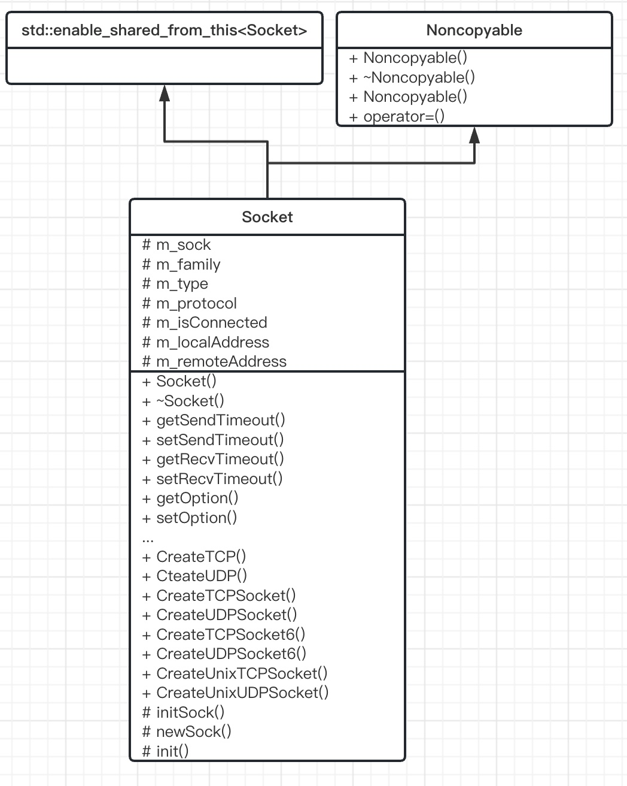

Socket模块
套接字类，表示一个套接字对象。

1. 模块设计
对于套接字类，需要关注以下属性：
- 文件描述符
- 地址类型（AF_INET, AF_INET6等）
- 套接字类型（SOCK_STREAM, SOCK_DGRAM等）
- 协议类型（这项其实可以忽略）
- 是否连接（针对TCP套接字，如果是UDP套接字，则默认已连接）
- 本地地址和对端的地址
套接字类应提供以下方法：
- 创建各种类型的套接字对象的方法（TCP套接字，UDP套接字，Unix域套接字）
- 设置套接字选项，比如超时参数
- bind/connect/listen方法，实现绑定地址、发起连接、发起监听功能
- accept方法，返回连入的套接字对象
- 发送、接收数据的方法
- 获取本地地址、远端地址的方法
- 获取套接字类型、地址类型、协议类型的方法
- 取消套接字读、写的方法
2. 模块实现
2.1 Socket
套接字类，继承enable_shared_from_this，且无法拷贝赋值
class Socket : public std::enable_shared_from_this<Socket>, Noncopyable {
public:
typedef std::shared_ptr<Socket> ptr;
typedef std::weak_ptr<Socket> weak_ptr;
/**
* @brief Socket类型
*/
enum Type {
/// TCP类型
TCP = SOCK_STREAM,
/// UDP类型
UDP = SOCK_DGRAM
};
/**
* @brief Socket协议簇
*/
enum Family {
/// IPv4 socket
IPv4 = AF_INET,
/// IPv6 socket
IPv6 = AF_INET6,
/// Unix socket
UNIX = AF_UNIX,
};
...
protected:
int m_sock;
int m_family;
int m_type;
int m_protocol;
bool m_isConnected;
Address::ptr m_localAddress;
Address::ptr m_remoteAddress;
};
3. 总结
一个完整的套接字类，创建包括TCP套接字、UDP套接字、Unix域套接字等等，还有各种套接字选项参数，实现绑定地址、发起连接、发起监听功能，可以获取本地和远端地址、套接字类型、地址类型、协议类型等等。